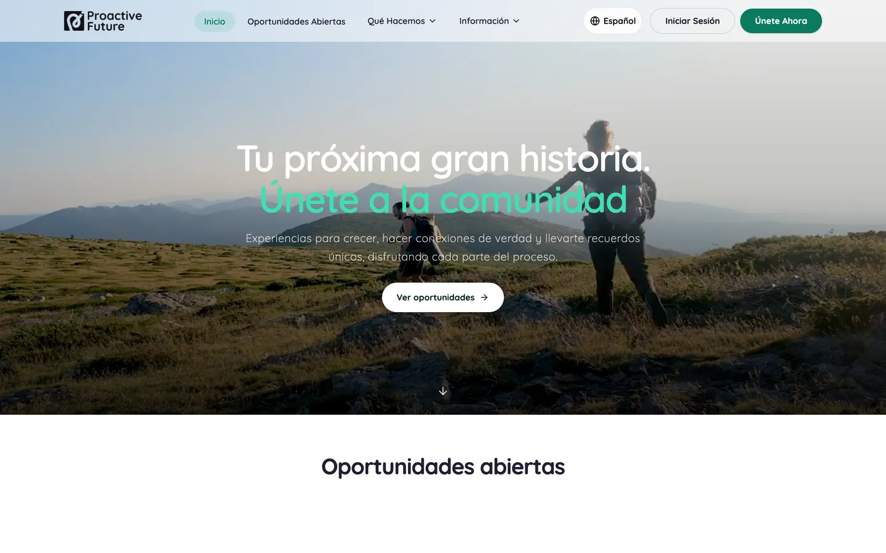
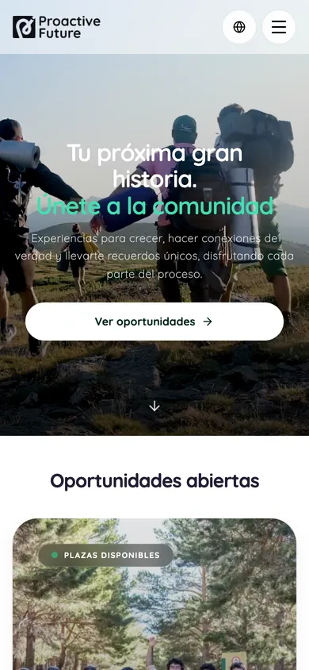
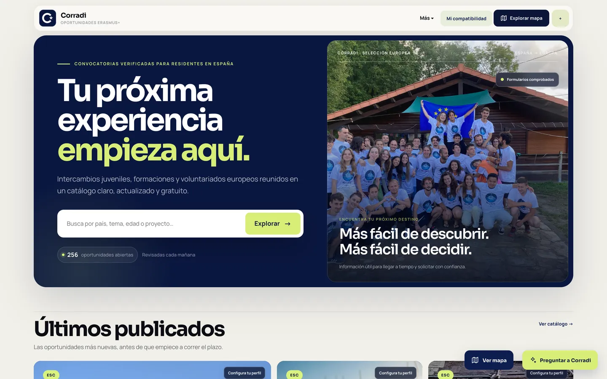
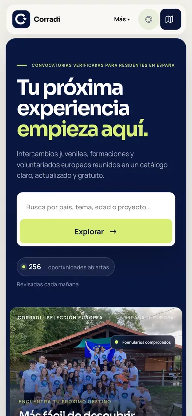
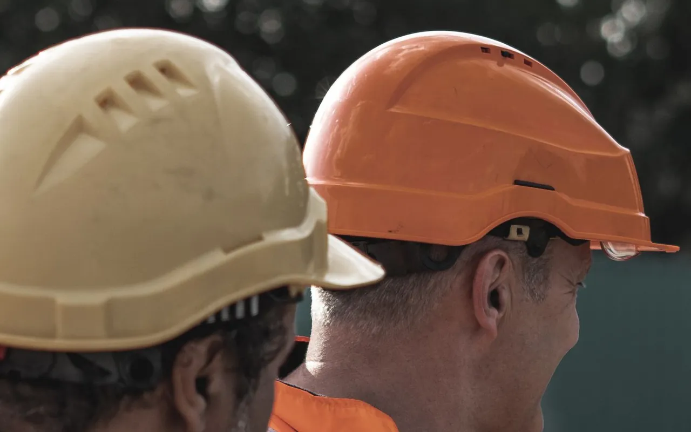

Somos especialistas en digitalizar y automatizar empresas. Entramos en tu negocio, encontramos lo que te frena y lo convertimos en una solución concreta, medible y a medida.
En llume convertimos la complejidad de digitalizar una empresa en soluciones concretas, que se pueden usar desde el primer día.
Trabajamos con innovación abierta, software libre y la tecnología más actual para que tu estrategia avance más rápido.
Soluciones
De la primera idea a la puesta en marcha.
Nos encargamos del proyecto completo, desde el primer análisis hasta que la solución funciona en tu día a día, para que veas resultados pronto y con garantías. Y exploramos la tecnología que viene para resolver los problemas de hoy.
01
Automatización de procesos
Quitamos de en medio el trabajo manual y repetitivo para que tu equipo dedique su tiempo a lo que aporta valor.
Presupuestos, pedidos y facturas que se generan solos
Informes que se preparan sin intervención
Avisos y seguimientos automáticos
02
Integración y migración a la nube
Conectamos las herramientas que ya usas y llevamos tus datos a la nube de forma ordenada, segura y sin parar tu actividad.
Migración de bases de datos heredadas
Conexión entre ERP, CRM y el resto de tus aplicaciones
Copias de seguridad y escalado automáticos
03
Plataformas y aplicaciones a medida
Diseñamos y desarrollamos webs, portales y herramientas internas, con frontend y backend propios, pensados para cómo trabaja tu organización.
Portales de clientes y áreas privadas
Pagos online, reservas e inscripciones
Paneles de gestión para tu equipo
04
Videoanálisis y seguridad laboral
Aprovechamos las cámaras que ya tienes para detectar riesgos y situaciones de interés en tiempo real.
Control de equipos de protección: casco y chaleco
Accesos a zonas restringidas o peligrosas
Alertas inmediatas al responsable
Casos de éxito
Un problema real. Una solución concreta.
Así hemos resuelto retos de empresas y organizaciones. Abre cada caso para ver cómo lo hicimos.
proactivefuture.eu


Asociaciones · Gestión de viajes
Plataforma de gestión de viajes para Proactive Future
El problema
Una asociación que organiza viajes gestionaba inscripciones, pagos y participantes entre hojas de cálculo, formularios y varias plataformas desconectadas.
La solución
Una plataforma web propia, con frontend y backend, que centraliza los datos, cobra online y organiza a participantes y coordinadores en un solo sitio.
El contexto
Proactive Future es una asociación que organiza viajes, intercambios y proyectos europeos para jóvenes. Cada salida implica inscripciones, plazas limitadas, pagos por fases y mucha comunicación con participantes y coordinadores.
El reto
La información estaba repartida entre hojas de cálculo, formularios, correos y distintas pasarelas de pago. Saber quién había pagado, cuántas plazas quedaban o qué faltaba por hacer obligaba a cruzar datos a mano, con el riesgo de errores y duplicados.
Qué hicimos
Una web pública en español e inglés con el catálogo de viajes y oportunidades abiertas.
Inscripción online con cuentas de usuario y pago con tarjeta por fases: reserva y resto.
Un panel de gestión para el equipo y los coordinadores, con participantes, plazas, pagos y documentación de cada viaje.
Notificaciones automáticas: recordatorios de pago, cuenta atrás hasta la salida y avisos de plazas.
Valoraciones de los participantes a la vuelta, para medir y mejorar cada edición.
Tecnología
React
TypeScript
Node.js
PostgreSQL
Stripe
Cloudflare
El resultado
Toda la operación de la asociación vive en un único sistema. Los participantes se inscriben y pagan solos, y el equipo ve en tiempo real el estado de cada viaje sin cruzar hojas de cálculo.
mapa.proactivefuture.eu


Juventud y Erasmus+
Corradi: oportunidades Erasmus+ en un solo lugar
El problema
Las convocatorias Erasmus+ circulan sueltas por webs, redes sociales y grupos de mensajería. Encontrar las fiables y vigentes obliga a rastrear decenas de fuentes que se quedan desactualizadas.
La solución
Un sistema que recoge las oportunidades de muchas fuentes, las revisa cada mañana y las publica en un catálogo con mapa y recomendación por afinidad.
El contexto
Corradi nace de un proyecto europeo entre organizaciones de España, Rumanía y Grecia para acercar a más jóvenes las oportunidades de movilidad: intercambios, formaciones y voluntariados.
El reto
Cada convocatoria llega con un formato distinto, muchas se repiten en varios canales y otras caducan sin que nadie avise. Mantener un listado al día a mano no era viable.
Qué hicimos
Un asistente en Telegram al que cualquier coordinador puede reenviar una convocatoria tal cual, sin rellenar formularios.
Extracción automática de los datos clave (país, fechas, edad, temática y plazo) y detección de duplicados.
Un catálogo web con buscador, mapa y filtros, y un test de compatibilidad que recomienda oportunidades según el perfil de cada joven.
Revisión diaria automática: las convocatorias vencidas se retiran solas.
Difusión automática en un canal de Telegram.
Tecnología
Python
FastAPI
PostgreSQL
Búsqueda semántica
Docker
AWS
El resultado
Un catálogo vivo, con más de 250 oportunidades abiertas revisadas cada mañana, que se mantiene prácticamente sin trabajo manual.

Casco ✓Casco ✓CAM 03 · EN DIRECTO
Construcción e industria
Seguridad laboral con cámaras
El problema
Vigilar a todas horas que se cumplen las medidas de prevención de riesgos laborales es imposible para una persona.
La solución
Videoanálisis sobre las cámaras existentes, que detecta incumplimientos en tiempo real y avisa al responsable al instante.
El contexto
En obras y naves industriales, el uso de los equipos de protección es obligatorio, pero controlarlo de forma continua depende de que alguien esté mirando.
El reto
Comprobar a todas horas que todo el mundo lleva casco y chaleco, o que nadie entra en una zona restringida, es imposible a simple vista. Los incumplimientos se descubren tarde, cuando ya ha habido un susto.
Qué hicimos
Análisis de vídeo sobre las cámaras ya instaladas, sin cambiar la infraestructura.
Detección en tiempo real del uso de casco y chaleco y de los accesos a zonas peligrosas.
Alertas instantáneas al responsable de prevención, con la imagen del momento.
Registro de incidencias para auditorías y planes de mejora.
Tratamiento de las imágenes respetando la privacidad de los trabajadores.
Tecnología
Visión artificial
Procesamiento en el propio centro
Panel web de alertas
El resultado
Los incumplimientos se detectan en el momento, no al revisar grabaciones, y el equipo de prevención dedica su tiempo a corregir, no a vigilar.
PresupuestoN.º 2026-0412
Análisis inicial480 €
Implantación1.250 €
Formación del equipo320 €
Total2.050 €
✓ Generado automáticamente
Procesos internos
Presupuestos automáticos
El problema
Preparar cada presupuesto a mano lleva horas, repite datos y deja margen al error.
La solución
Un proceso automatizado que recoge la petición, genera el presupuesto con el formato de la empresa y lo deja listo para enviar.
El contexto
Una empresa de servicios preparaba cada presupuesto a mano, copiando datos de clientes, tarifas y condiciones entre varios documentos.
El reto
Cada presupuesto llevaba horas, los mismos datos se escribían una y otra vez, y cualquier error en un precio o una condición llegaba al cliente.
Qué hicimos
Recogida automática de la petición del cliente, desde el formulario web o el correo.
Cálculo con las tarifas y las reglas de la empresa.
Generación del documento con su imagen corporativa, listo para revisar y enviar.
Seguimiento de los presupuestos enviados, aceptados y pendientes.
Tecnología
Automatización de flujos
Integración con correo
Generación de documentos
El resultado
Los presupuestos salen en minutos en lugar de horas, siempre con el mismo formato y sin errores de copia.
Base de datos heredadaNube
✓ Migración validada
Banca
De una base de datos antigua a la nube
El problema
Una entidad bancaria dependía de una base de datos difícil de mantener y de escalar.
La solución
Migramos sus datos a una base de datos en la nube, más moderna, escalable y fácil de mantener.
El contexto
Una entidad bancaria trabajaba sobre una base de datos antigua, crítica para su operativa diaria.
El reto
El sistema era difícil de mantener, costoso de escalar y dependía de conocimientos muy concretos. Cualquier cambio suponía un riesgo para el negocio.
Qué hicimos
Auditoría de los datos y de los procesos que dependían de ellos.
Diseño de la nueva base de datos en la nube y de un plan de migración por fases.
Migración y validación de los datos sin interrumpir la operativa.
Copias de seguridad automáticas, monitorización y documentación para el equipo.
Tecnología
Bases de datos en la nube
Migración automatizada
Monitorización
El resultado
Una base de datos moderna, escalable y más fácil de mantener, preparada para crecer con la entidad.
Método
Del problema a la solución.
Un proceso claro, ágil y transparente. Nos adaptamos a tu realidad y te acompañamos en cada fase.
01
Entendemos
Analizamos tu negocio, tus procesos y el problema concreto que quieres resolver. Escuchamos antes de proponer.
02
Diseñamos
Definimos la solución con un alcance, unos plazos y unos resultados esperados claros antes de empezar.
03
Implementamos
La desarrollamos y la integramos en tu entorno, con entregas frecuentes y un seguimiento transparente.
04
Medimos
Comprobamos que resuelve el problema y seguimos mejorándola. Lo que no se mide, no se puede mejorar.
Nosotros
Personas que convierten problemas en soluciones.
llume nace de la convicción de que la tecnología debe estar al servicio de las personas y de las empresas que construyen el mundo real. En asturiano, llume es la lumbre, la luz que se enciende en casa. Queremos ser eso para tu empresa: una referencia fija, como la estrella polar, cuando todo lo demás se mueve.
Innovación
Buscamos la mejor forma de resolver cada reto, no la más repetida.
Tecnología de vanguardia
Las herramientas más actuales y el software libre, al servicio de tu negocio.
Agilidad
Entregas frecuentes y seguimiento transparente en cada fase.
Cercanía
Trabajamos contigo, no solo para ti.
Nuestra misión es ayudar a las empresas a ser más eficientes, creativas y humanas gracias a la tecnología.
Confían en nosotros
Contacto
Hablemos de tu próximo proyecto.
Reserva una reunión de 30 minutos, sin compromiso. Nos cuentas tu reto y te explicamos cómo lo abordaríamos.
Reunión de 30 minutosGratuita y sin compromiso, por videollamada.